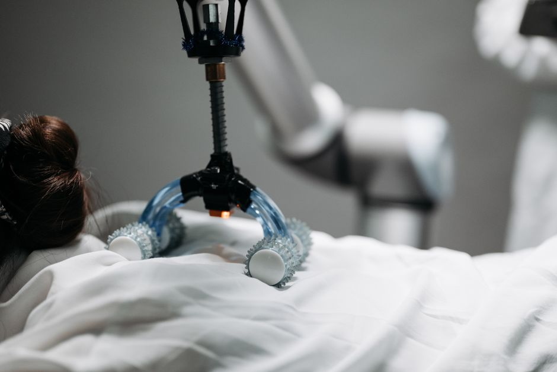

Imagine a world where robots aren't just rigid, clunky machines made of metal and gears, but rather soft, squishy, and incredibly flexible, capable of gently grasping a ripe tomato without bruising it, or squeezing through a tiny crack to rescue someone. This isn't science fiction anymore! Welcome to the exciting realm of soft robotics, a revolutionary field that's changing how we think about what robots can be and what they can do. At MakerWorks, we believe in exploring the cutting edge of technology, and soft robotics is undoubtedly one of the most fascinating frontiers for young innovators like you.
What are Soft Robots?
For decades, robots have been synonymous with industrial arms: strong, precise, but ultimately stiff and often dangerous to work alongside. Soft robots, on the other hand, draw their inspiration from nature itself. Think of an octopus gracefully navigating coral reefs, an elephant's trunk manipulating objects with incredible dexterity, or even a caterpillar inching its way forward. These creatures achieve complex movements and interactions using flexible bodies, not rigid skeletons. Soft robotics aims to replicate this natural compliance and adaptability by using materials that are inherently soft and deformable.
Beyond Metal and Motors
The magic of soft robots lies in their materials. Instead of steel and aluminum, engineers in this field work with silicone, rubber, various polymers, and even fabrics. These materials allow robots to bend, twist, stretch, and squeeze in ways traditional robots simply cannot. This flexibility is not just for show; it's fundamental to their function, enabling them to safely interact with humans, delicately handle fragile items, and navigate complex, unpredictable environments.
Soft robots represent a paradigm shift, moving from the precision of rigid machines to the adaptability and safety of compliant systems, truly mimicking the wonders of biological forms.
Why Soft Robotics? The Advantages
The shift from rigid to soft brings a host of compelling benefits that open up entirely new possibilities for robotics.
Safety First
One of the most significant advantages of soft robots is their inherent safety. Imagine a robot working in a hospital or alongside factory workers. If a traditional, rigid robot accidentally bumps into a person, it could cause serious injury. A soft robot, made of compliant materials, would simply deform on impact, significantly reducing the risk. This makes them ideal for collaborative tasks where humans and robots work side-by-side.
Adaptability and Dexterity
Have you ever tried to pick up something very delicate or oddly shaped with a pair of pliers? It's hard! Soft robots excel at this. Their flexible bodies and grippers can conform to the shape of almost any object, allowing them to grasp fragile items like fruits, eggs, or even intricate electronics without damage. They can also squeeze through tight spaces or over uneven terrain, making them perfect for exploration or rescue missions where rigid robots would get stuck.
Bio-inspiration
Nature has had billions of years to perfect its designs. Soft robotics takes a page from this evolutionary playbook. By studying the biomechanics of creatures like octopuses (which have no bones and can change shape dramatically) or the human hand (with its complex network of soft tissues and bones), engineers gain insights into designing robots that are not only functional but also incredibly versatile and efficient.
How Do Soft Robots Work? Actuation Mechanisms
If soft robots don't have traditional motors and gears driving their movements, how do they move? This is where flexible actuators come into play.
Pneumatic Powerhouses
One of the most common and effective ways to make soft robots move is through pneumatic actuation. Think of a balloon: when you blow air into it, it inflates and changes shape. Soft robots use a similar principle. They are often constructed with internal channels or chambers. By precisely pumping air (or sometimes liquid) into these chambers, engineers can cause specific parts of the robot to inflate, bend, stretch, or contract.
For example, a soft robotic gripper might have multiple fingers, each with several internal air chambers. By inflating one side of a finger, it bends. Inflating multiple chambers in sequence can create complex curling or grasping motions. The air pressure can be controlled using small pumps and valves, often managed by a microcontroller like an Arduino or Raspberry Pi.
# Conceptual Python-like code for a pneumatic soft robot actuator
# This isn't real hardware control, but illustrates the logic.
# Imagine 'actuator_valve_controller' is a library for controlling physical valves.
def set_pneumatic_chamber(chamber_id, pressure_percentage):
"""
Simulates sending a command to inflate/deflate a specific pneumatic chamber.
pressure_percentage: A value from 0 (deflated) to 100 (fully inflated).
"""
if 0 <= pressure_percentage <= 100:
print(f"Actuator {chamber_id}: Adjusting air pressure to {pressure_percentage}%...")
# In a real system, this would send a signal to a valve controller
# e.g., actuator_valve_controller.set_pressure(chamber_id, pressure_percentage)
if pressure_percentage > 70:
print(f" -> Chamber {chamber_id} is significantly deforming/bending.")
elif pressure_percentage > 30:
print(f" -> Chamber {chamber_id} is slightly active.")
else:
print(f" -> Chamber {chamber_id} is mostly relaxed.")
else:
print(f"Error: Pressure percentage for {chamber_id} must be between 0 and 100.")
print("--- Soft Robot Gripper Simulation ---")
# Scenario 1: Gently grip a delicate object (e.g., a ripe strawberry)
print("\nTask: Gently gripping a strawberry.")
set_pneumatic_chamber("Finger_1_segment_A", 35)
set_pneumatic_chamber("Finger_2_segment_A", 40)
set_pneumatic_chamber("Finger_3_segment_A", 38)
print("Strawberry gripped softly!")
# Scenario 2: Release the object
print("\nTask: Releasing the strawberry.")
set_pneumatic_chamber("Finger_1_segment_A", 5)
set_pneumatic_chamber("Finger_2_segment_A", 5)
set_pneumatic_chamber("Finger_3_segment_A", 5)
print("Strawberry released!")
# Scenario 3: Attempt to lift a heavier, but still fragile, object
print("\nTask: Attempting to lift a small glass bottle.")
set_pneumatic_chamber("Finger_1_segment_A", 70)
set_pneumatic_chamber("Finger_2_segment_A", 75)
set_pneumatic_chamber("Finger_3_segment_A", 70)
set_pneumatic_chamber("Finger_1_segment_B", 60) # A second segment for more grip
set_pneumatic_chamber("Finger_2_segment_B", 65)
set_pneumatic_chamber("Finger_3_segment_B", 60)
print("Glass bottle lifted securely!")
print("\n--- Simulation End ---")
Other Flexible Actuators
While pneumatics are widely used, other fascinating methods exist:
- Hydraulic Actuators: Similar to pneumatics but use liquid instead of air, offering greater force for a given size.
- Electroactive Polymers (EAPs): These "artificial muscles" change shape or size when an electric voltage is applied.
- Shape Memory Alloys (SMAs): Metals that "remember" a certain shape and return to it when heated.
- Tendons and Cables: Inspired by biological muscles and tendons, these systems use thin cables pulled by small motors to deform soft structures.
Applications of Soft Robotics
The unique capabilities of soft robots are opening doors in various fields.
Healthcare and Rehabilitation
This is a huge area for soft robotics. Imagine a soft robotic glove that helps stroke patients regain hand function, gently assisting their movements. Or wearable exosuits that support elderly individuals in walking. Soft surgical tools could navigate delicate internal organs with minimal invasiveness. Their compliance and safety make them perfect for direct interaction with the human body.
Exploration and Rescue
Soft robots can squeeze through rubble in disaster zones, explore underwater environments without damaging fragile ecosystems, or even navigate the treacherous terrain of other planets. Their ability to deform and adapt makes them invaluable where rigid robots would fail.
Manufacturing and Gripping
In factories, soft grippers are being developed to handle delicate electronic components, fresh produce, or oddly shaped items that traditional robotic arms struggle with. This reduces waste and improves efficiency.
Everyday Life
In the future, we might see soft robots helping around the house, assisting with chores, or even acting as safer, more engaging robotic toys for children. The possibilities are truly boundless!
The Road Ahead: Challenges and Opportunities
While soft robotics is incredibly promising, it's still a relatively young field. Challenges include:
- Precise Control: Predicting and controlling the deformation of soft materials can be more complex than with rigid parts.
- Durability: Soft materials can be more susceptible to wear and tear or punctures.
- Power and Speed: Current soft robots are often slower and less powerful than their rigid counterparts, though this is rapidly improving.
However, these challenges are also immense opportunities for innovation. Researchers and young engineers like you are constantly working on new materials, better control algorithms, and more efficient actuation methods to push the boundaries of what soft robots can achieve.
Conclusion and Call-to-Action
Soft robotics is truly an exciting frontier, blending engineering with biology and material science to create a new generation of robots that are safer, more adaptable, and more capable than ever before. From helping patients recover to exploring distant worlds, the potential impact of these flexible machines is immense.
Are you inspired to dive into the world of soft robotics? At MakerWorks, we encourage you to explore, experiment, and innovate! Start by researching different soft materials, learn about pneumatics, or even try to design a simple soft gripper using readily available materials. Who knows, your ideas might just shape the future of robotics!
Stay tuned to MakerWorks for more exciting insights into robotics, STEM, and how you can become a part of this incredible journey. What soft robot would YOU like to build?